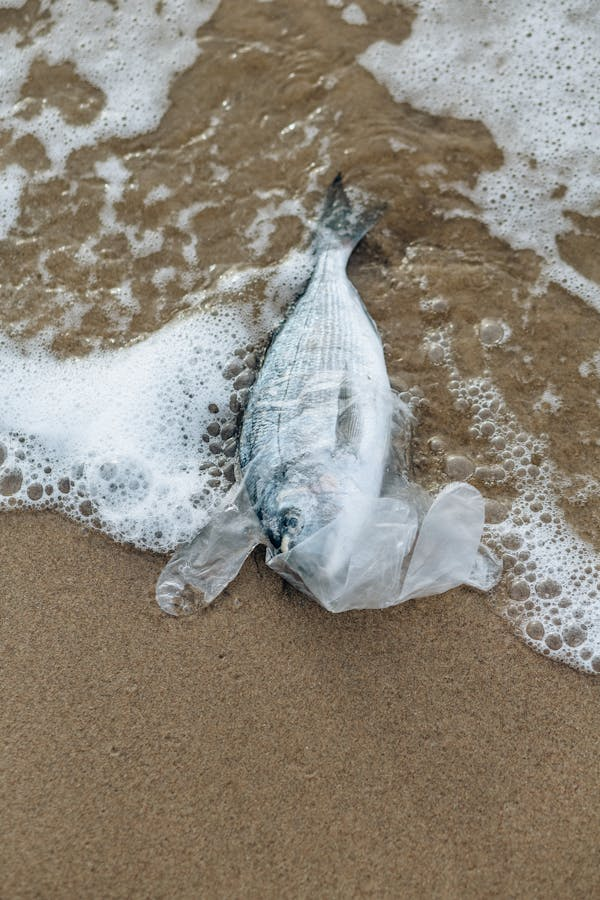

Oil spills, chemical waste, and plastic debris entering the ocean.

Fish are killed by plastic by Pixabay.
Marine pollution harms oceans through plastic waste, oil spills, and toxic chemicals. Fish often mistake plastic for food, leading to injury or death. This pollution damages marine ecosystems and affects human livelihoods, highlighting the need for urgent action.